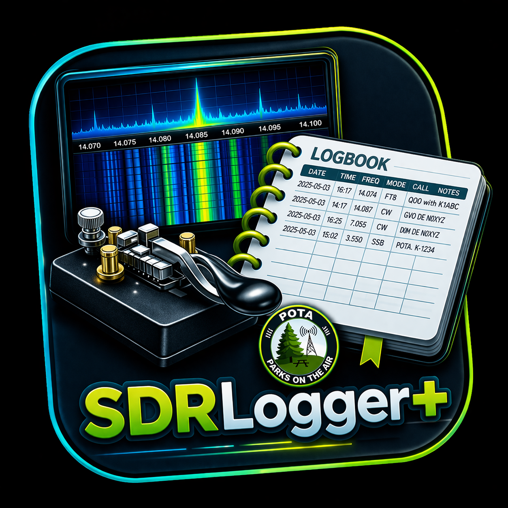
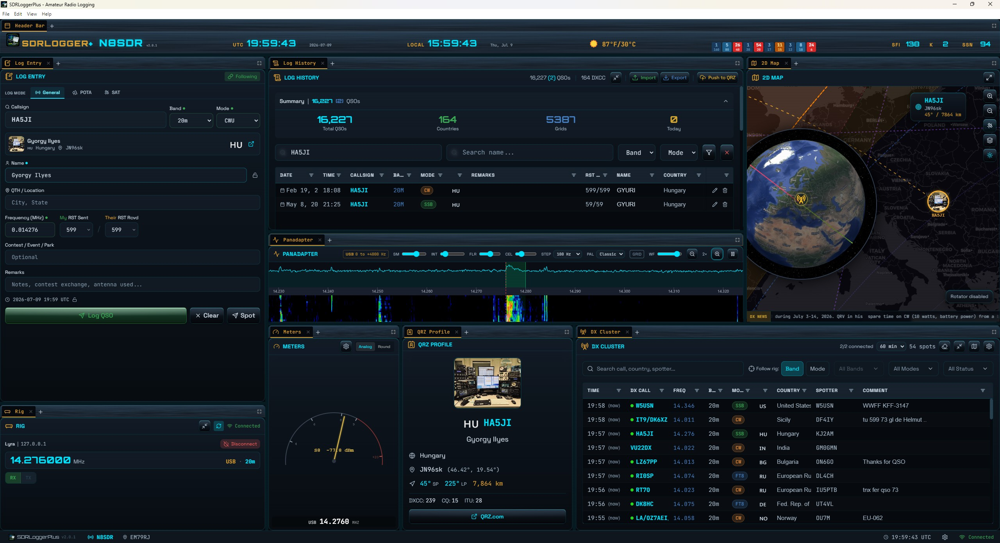

Modern, cross-platform amateur radio logging.
Windows · macOS · Linux

What it does
📓 Logging
Dockable, drag-and-drop panels with saved workspaces, live callsign lookup, a searchable logbook, ADIF import/export, and an ADIF file monitor that auto-imports QSOs from other programs.
📡 DX spotting & alerts
Real-time DX cluster with new-DXCC / band status, Reverse Beacon Network band-opening alerts with voice, spothole.app, DXpeditions, and a Hot List with text-to-speech.
🗺️ Maps & visualization
An interactive 2D map and a 3D globe with great-circle beam headings to the focused DX, plus a TCI-driven panadapter and meter panels.
🏆 Awards & statistics
Tracking for DXCC, WAS, WAZ, WPX, WAC, 5BWAS, 5BDXCC, VUCC, POTA and IOTA, with per-band / per-mode detail and filtering.
🎛️ Radio & station control
CAT via bundled Hamlib, TCI (Lyra / Thetis / SunSDR) with live panadapter and meters.
🔗 Lyra Combo Link
A two-way link with the Lyra SDR console over TCI — band, mode and frequency stay in sync, DX spots push across for click-to-tune, and CW contacts log straight from Lyra's CW console with call and RST.
🔌 Digital & online
FT8 / FT4 decode monitoring, smart alerts and grid tracking (below), WSJT-X / JTDX auto-logging over UDP (two sources at once), plus LoTW, Club Log, HRDLog and PSK Reporter uploads.
🛰️ Satellite & propagation
CSN S.A.T. controller integration and satellite tracking, with propagation, solar, aurora and space-weather panels.
⛈️ Station weather
Severe-weather alerts from NWS plus your own Ambient Weather or Ecowitt station — pull the antenna before the storm.
Smart assistants
🎯 DX Coach
Turns the DX cluster into a ranked to-do list: it surfaces only the spots that would fill an award gap — a new DXCC entity, a new CQ zone, or a new band-slot — each with a coarse propagation read (open / marginal / closed plus gray-line timing) from your grid and the live solar numbers. Click one to tune. Optional spoken nudges when a fresh one lands, and band-class filters so an HF-only op never sees 2m.
🤖 AI Chat
Point it at a callsign and get instant, grounded talk points — your own past QSOs with them, their QRZ profile, and ready conversation starters — then ask follow-ups. Bring your own key for Anthropic, OpenAI, Groq or OpenRouter, or run it fully local and free with Ollama. Your key stays on your machine; calls go straight to the provider.
Digital Mode Alerts & Grid Tracking
📶 Digital Decodes
Reads the live FT8 / FT4 decode stream from your WSJT-X, JTDX or MSHV over UDP — no separate decoder needed — and shows it right inside SDRLogger+. Every decode is coloured by what it would give you — a new DXCC entity, band-slot, CQ zone or grid — with Needed-only and CQ-only filters. Double-click a decode and your decoder answers that CQ. No JTAlert needed.
🔔 Digital Decode Alerts
Geo-scoped rules that sound, speak or pop only for what you're chasing: an award need (DXCC / band / zone / grid) × a region (continent, DXCC entity, US call area, prefix, grid field) × band and mode. So "needed grids, North America only, 20m" is a single rule. Quick-add presets, and voice shares the app's announcement voice.
🗺️ Grid Tracker
A Maidenhead grid map that fills in as you work the world — worked grids in green (brighter once confirmed), needed in red, and stations decoding right now ringed in cyan (a needed-and-live grid pulses chase it). Country outlines, pan / zoom, VUCC progress, and Follow Digital Decodes to lock the map to your session. No GridTracker needed.
Companion app
🔗 Lyra — the SDR that speaks SDRLogger+
Running a Hermes Lite 2 / 2+? Lyra is SDRLogger+'s sister application — a native SDR transceiver by the same team. Link the two over TCI and switch on Combo: grab a call in Lyra's CW console and it lands here with a callbook lookup, the operator's name flows back to your macros, RST auto-fills from Lyra's calibrated S-meter, and one macro logs the QSO as you send 73.
Credits & lineage
Rick Langford (N8SDR) — lead developer, creator of SDRLogger+.
Brent Crier (N9BC) — cross-platform .NET / React / Electron edition.
Builds on Log4YM by Brian Keating (EI6LF), released into the public domain, and continues the original SDRLogger+ project. MIT licensed; bundled Hamlib and libusb are LGPL-2.1.